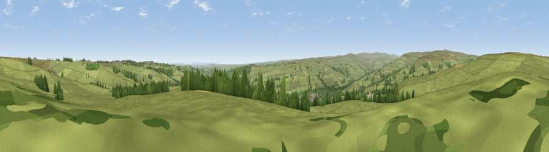

Viewpoint near Wolsingham
#13247 in England · top 27% of its area beats it · near WolsinghamWhere it is
The exact computed spot (NZ 08425 39075). Click the marker for map links.
The view, rendered

A 360° render of this exact spot computed from the terrain model, tree cover and land cover — summer colours, afternoon light, calibrated against photographs of famous viewpoints. Real trees, hedges and buildings will differ in detail.
The panorama
Grey silhouette: terrain skyline in each direction (720 bearings, Earth curvature and refraction included). Dashed green: skyline with trees (+15 m) and buildings (+8 m) as obstacles. Blue strip: how far the ground is visible on each bearing.
Where the view opens
Wedge length = distance to the farthest visible ground on that bearing (vegetation-aware). Rings at 10, 25 and 50 km.
What fills the view
87% grassland · 10% woodland · 2% cropland · 1% built-up
Angular shares of the visible panorama (visual magnitude), not map area. Landscape diversity 0.21 (0–1 Shannon).
Key numbers
More beautiful places nearby
The staircase of upgrades: each row has a higher view potential than everything closer. Driving times are estimates from straight-line distance, calibrated against real road routing — check an actual route before setting out.
| Place | Direction | Drive | Score |
|---|---|---|---|
| Viewpoint near Wolsingham | NW · 1 km | ~3 min | 61.9 |
| Viewpoint near Wolsingham | NNW · 2 km | ~4 min | 63.0 |
| Viewpoint near Frosterley | W · 6 km | ~13 min | 66.4 |
| Fatherley Hill | W · 6 km | ~13 min | 66.7 |
| Viewpoint near Frosterley | W · 6 km | ~13 min | 68.3 |
| Collier Law | WNW · 7 km | ~15 min | 71.7 |
| Pontop Pike | NNE · 15 km | ~27 min | 77.8 |
| Little Dun Fell | W · 38 km | ~57 min | 78.4 |
54.74657, -1.87064 · source: screening · position refined by local search. Computed location — check access rights before visiting.